uni87 Archive: Newspapers
Archived newspapers articles (physical and digtal) obtained from Universe 087's InterNet
| 1960-1969 | 1970-1979 | 1980-1989 | 1990-1999 |
| 2000-2009 | 2010-2019 | 2020-2029 | 2030-2040 |
1960-1969
| ID | Date Published | Source | Type | Related Information | Link to clipping |
| NWS-87-WpnZ | May 6, 1964 | Southern Utah News Advertiser | Physical |
Description: The Hurricane High School Engineering Club winning the Southwest Utah Innovation and Science Fair |
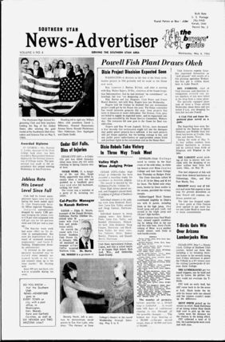 |
| NWS-87-AvfQ | February 20, 1969 | Southern Utah Free Press | Physical | Description: Marriage of William Afton and Kathy Walker | 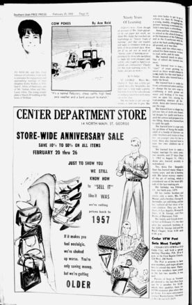 |
1970-1979
| ID | Date Published | Source | Type | Related Information | Link to clipping |
| NWS-87-aeTI | May 13, 1971 | Washington County News | Physical | Description: First birthday of Michael Afton | 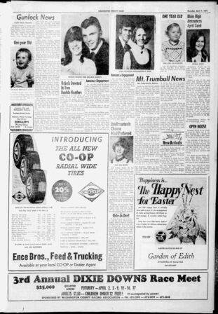 |
| NWS-87-zgcD | December 29, 1977 | Washington County News | Physical |
Headline: Katherine Scoles to Wed Henry J. Emily Description: Marriage of Henry Emily and Katherine Scholes |
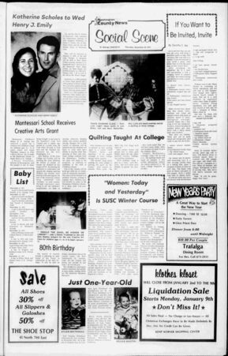 |
| NWS-87-xL18 | November 2, 1978 | Washington County News | Physical |
Headline: Animatronic Diner Opens in Hurricane City Description: Opening of Fredbear's Family Diner |
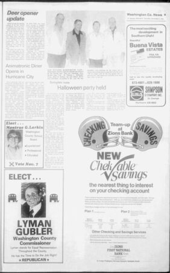 |
| NWS-87-SNAT | November 2, 1978 | Washington County News | Physical | Description: Birth of Evan Afton (December 14) |

|
| NWS-87-4H7D | March 29, 1979 | Washington County News | Physical | Description: Display advertisement for Fredbear's Family Diner | 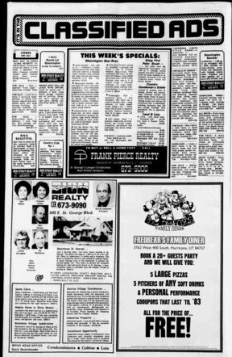 |
| NWS-87-rP90 | August 30, 1979 | Washington County News | Physical | Description: Birth of Charlotte Emily (August 15) | 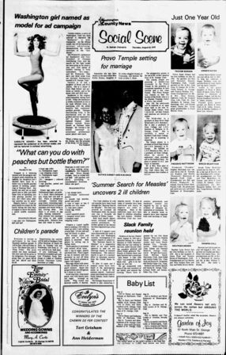 |
1980-1989
| ID | Date Published | Source | Type | Related Information | Link to clipping |
| NWS-87-8jjd | December 16, 1982 | Washington County News | Physical |
Headline: 3-Year-Old Missing After Birthday Party Description: Disapperance of Charlotte Emily |
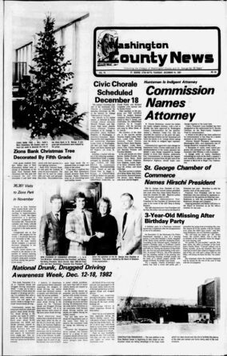 |
| NWS-87-RXG4 | March 8, 1983 | The Daily Spectrum | Physical |
Headline: Restaurant owner missing Description: Disapperance of Henry Emily |
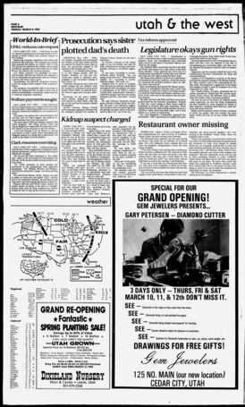 |
| NWS-87-MQIm | December 15, 1983 | The Daily Spectrum | Physical |
Headline: Robot bites child's head Description: Evan Afton's fatal accident |
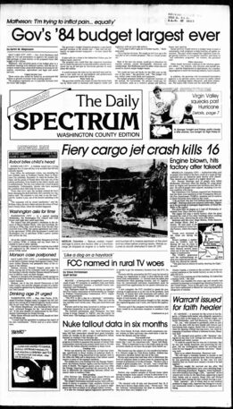 |
| NWS-87-V6Bj | January 2, 1984 | The Salt Lake Tribune | Physical |
Headline: Salt Lake Entrepreneurs to Enter Pizza
Industry Description: The purchase of Fazbear Entertainment Inc. |
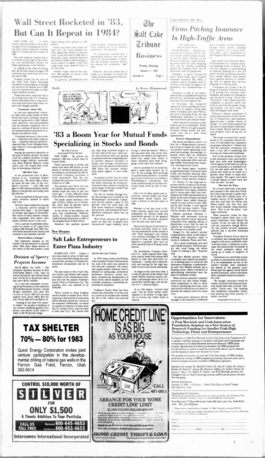 |
| NWS-87-qunl | May 10, 1984 | Washington County News | Physical |
Description: Display advertisement for the reopening of Freddy Fazbear's Pizza |
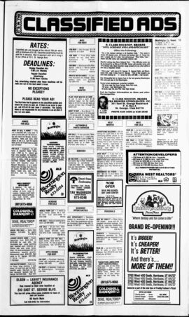 |
| NWS-87-eZkI | August 9, 1984 | The Salt Lake Tribune | Physical |
Headline: Freddy's Opens In Salt Lake City Description: Opening of Freddy Fazbear's Pizza in Salt Lake City |
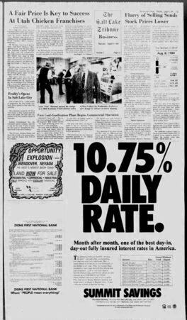 |
| NWS-87-YYjb | October 18, 1984 | Washington County News | Physical | Description: Birth of Elizabeth Afton (October 6) | 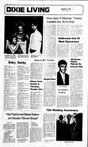 |
| NWS-87-IALb | November 1, 1984 | The Daily Spectrum | Physical |
Headline: Leaks postponed pizzeria opening Description: Circus Baby's Pizza World opening day cancellation |
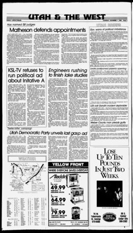 |
| NWS-87-LP3N | February 4, 1985 | The Daily Herald | Physical |
Headline: Freddy Fazbear Comes to Provo Description: Opening of Freddy Fazbear's Pizza in Provo City |
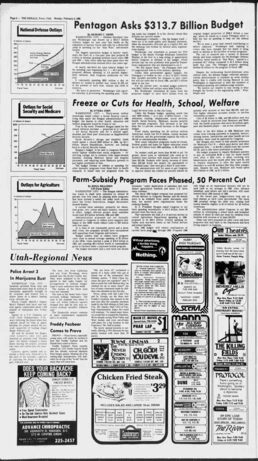 |
| NWS-87-chYS | April 20, 1985 | The Daily Herald | Physical | Description: Display advertisement for Freddy Fazbear's Pizza | 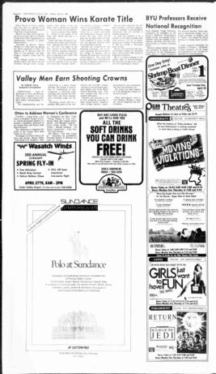 |
| NWS-87-hY8Z | June 3, 1985 | The Salt Lake Tribune | Physical |
Headline: Five Children Missing at Hurricane Pizza Restaurant Description: Disappearance of five children at the Hurricane Freddy Fazbear's Pizza |
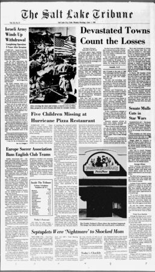 |
| NWS-87-rcXL | August 7, 1986 | The Salt Lake Tribune | Physical |
Headline: Complaints Pile as Sales Fall for Freddy
Fazbear's Description: Health complaints for Freddy Fazbear's Pizza |

|
| NWS-87-lTEc | April 8, 1987 | The Daily Spectrum | Physical |
Headline: Freddy's closed for health violations Description: Closure of the St. George Freddy Fazbear's Pizza |
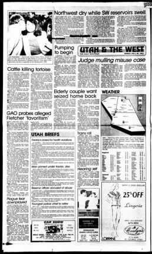 |
| NWS-87-QhF0 | November 8, 1987 | The Daily Spectrum | Physical |
Headline: Man injured after freak accident at pizzeria Description: Accident at the Salt Lake City Freddy Fazbear's Pizza |
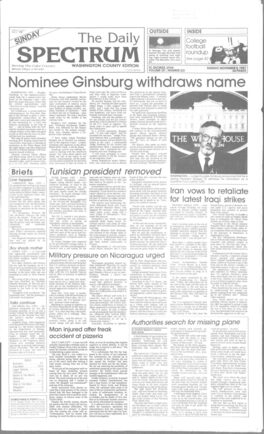 |
| NWS-87-fqLJ | March 8, 1988 | Washington County News | Physical |
Description: Classified advertisement for Circus Baby's Entertainment and Rental |
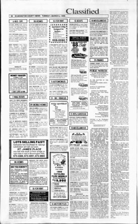 |
| NWS-87-fEwF | March 20, 1988 | The Salt Lake Tribune | Physical |
Headline: Freddy's to Close All Locations Description: Mass closure of Freddy Fazbear's Pizza |
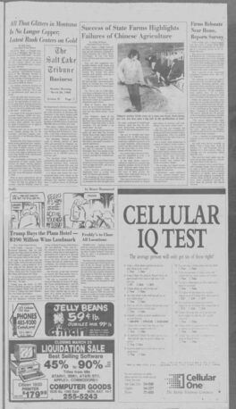 |
| NWS-87-ik9F | September 24, 1989 | The Daily Spectrum | Physical |
Headline: Freddy's reopens after mass closure Description: Reopening of the Hurricane Freddy Fazbear's Pizza |
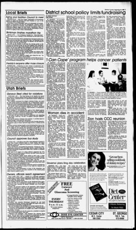 |
1990-1999
| ID | Date Published | Source | Type | Related Information | Link to clipping |
| NWS-87-MWtJ | July 2, 1991 | The Daily Spectrum | Physical |
Description: Display advertisement for the Hurricane Freddy Fazbear's Pizza |
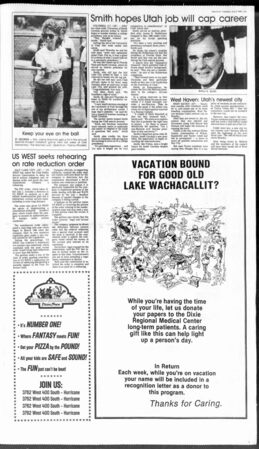 |
| NWS-87-nokJ | June 29, 1992 | The Daily Spectrum | Physical |
Headline: Children vanish at pizzeria Description: Disappearance of five children at the Hurricane Freddy Fazbear's Pizza |
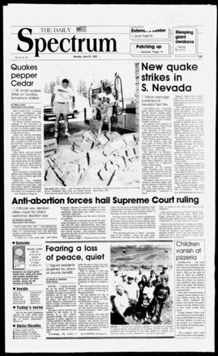 |
| NWS-87-fUyw | September 10, 1992 | The Daily Spectrum | Physical |
Headline: Freddy's to close by year's end Description: Bankruptcy and closure announcement of Fazbear Entertainment Inc. |
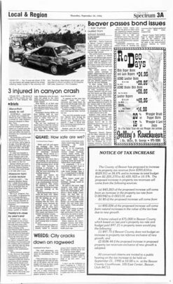 |
| NWS-87-vST1 | December 31, 1992 | The Daily Spectrum | Physical |
Headline: Troubled pizzeria finally closes Description: Final closure of Freddy Fazbear's Pizza |
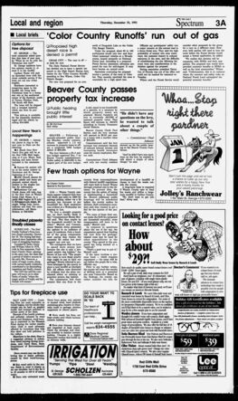 |
2000-2009
Index not found!
2010-2019
Index not found!
2020-2029
Index not found!
2030-2040
Index not found!